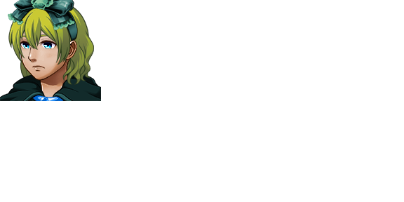

| Lehiakide | |
 | |
| Attributes | |
| Name Meaning: | competitor |
| Unique Ability: | Drawing power from the internet itself |
| Class Title: | Gogorr-maita |
| Location: | The Great Cliffs |
| Role: | Antagonist (Chapter 2); Playable Character (Chapter 4-) |
| Affiliation: | None (until Chapter Four), Solvers (Chapter Four onwards) |
| First Appearance: | Chapter Two |
| Typing Style: | Normal |
| Music Theme(s): | "Approaching Me (Lehiakide's Theme)", "Grudge Match", "Just Talking", "Grudges Never Cool (Unused)" |
| Details | |
| Species: | Game Character (Figment Hybrid) |
| Gender: | Non-Binary |
| Eye Color: | Blue (Base Form) Yellow (Gorria Form) |
| Hair Color: | Olive Green (Base Form) Red (Gorria Form) |
| Status: | Alive |
| Links | |
| Twitter: | Link |
| Reddit: | Link |
Lehiakide is an archetypical tsundere. They are rude, foulmouthed, and ornery, but occasionally reveal a softer side. They have a character weakness to affection, evident when they can be defeated with a few uses of the (initially) unused skill Flirt in Chapter Two. This character weakness also somewhat extends to sexuality in general, as evinced when Iklusea strips during the second phase of her optional boss fight in Chapter Five.
Lehiakide is the primary antagonist of Chapter Two. Lehiakide was always going to be the antagonist of the Desert Chapter, but interacting with the Solvers made them decide to increase the difficulty of their chapter immensely, including importing The Mansion from four chapters later (Chapter Six) and increasing their own stats massively.
In the fifth and final battle with Lehiakide in Chapter Two, Abby gives the Avatar access to the unused skill Flirt, which allows the Avatar to defeat Lehiakide non-violently (see Personality). Lehiakide can also be defeated violently here.
When Lehiakide appears in Chapter Three, they are experiencing a depressive mood brought about by being defeated. At this point, their hair has been changed. Lehiakide adds themself to the Avatar's Universal Communicator, allowing them to be contacted throughout the Chapter, along with Abby.
Lehiakide is recruited as a party member in Chapter Four, where they help the Avatar and Abby fight Haizea, Basati, Tximista, Zelatatu, and Simulacra-1337.
In Chapter Five, Lehiakide is the sole party member besides the Avatar. Tximista returns to claim Lehiakide as their own, first chasing, then drugging and knocking out Lehiakide. After escaping this experience (thanks to a conveniently timed tank from Ross Bot), Lehiakide is somewhat traumatized but continues forward.
Lehiakide is a starting party member along with Abby in Chapter Six, and stays in the party the entire chapter.
In Chapter Seven, Lehiakide's questline involves the Communication Hub, and unlocking their Unique Ability. After they do so, Simulacra-0729, Simulacra-2187, and Simulacra-6561 challenge them (and the party) to a battle to test their strength.
Lehiakide's Unique Ability is "the ability to draw power from the internet itself". What this ability's uses are is not very well explored, but it does allow Lehiakide to achieve a super mode called Gorria Form.
Lehiakide's signature skill is Backup Bash, a powerful physical strike that has a 15% chance to hit.
Lehiakide's other abilities include Bedazzle, Thunderbolt, and Hyperspeed.
Their weapons of choice are kunai, which allow them many attacks per turn.
Lehiakide has a love-hate relationship with the Solvers, and by extension the Avatars they control.
Despite being specifically weak to most of her abilities, Lehiakide is friendly with Abby. Abby's flirtatious personality causes some problems when interacting with Lehiakide, however.
Originally planned to be Lehiakide's love interest in a bonus mode starring them, Tximista (and the bonus mode) were scrapped early into development. When Tximista escaped the Infinite Field with the help of Simulacra-1337, due to her incomplete programming, Tximista began pursuing Lehiakide single-mindedly. Lehiakide views Tximista as a menace, and is more than a little bit creeped out by her advances, once they start to notice them at all.
Unlike most characters, Lehiakide was on good enough terms with Haizea to attempt to convince her to not continue a conflict with Simulacra-1337. Not much is known about their relationship otherwise.
Lehiakide likes Iklusea, but is constantly flustered by her.
| This page is in the folowing categories: Non-Binary Characters, Game Characters, Humanoid, Characters with Multiple Forms |